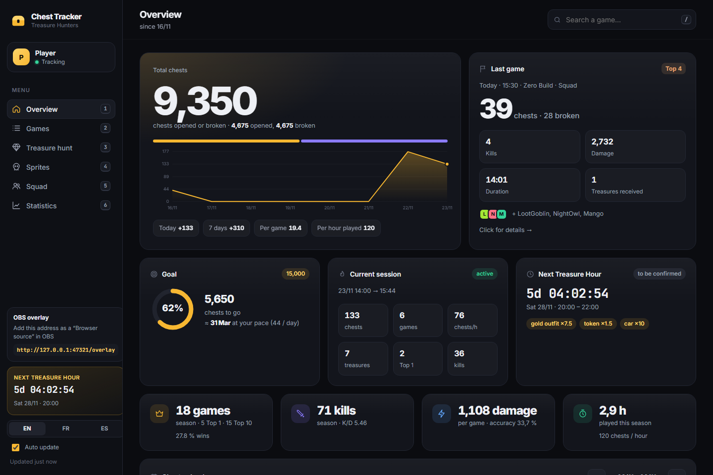
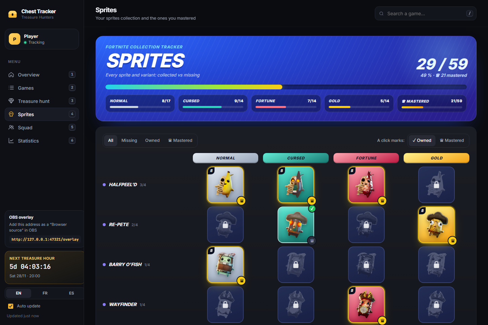

Cuenta todos los cofres que abres en Fortnite
Una app gratis para Windows que lee las repeticiones que Fortnite guarda en tu PC y cuenta los cofres que tú abriste o rompiste, partida tras partida. Con tus probabilidades de la caza del tesoro, tu colección de sprites, tu escuadra y un contador en directo para OBS.

Todo lo que necesitas
Al primer inicio eliges las funciones que quieres. El panel solo muestra esas.
Contador de cofres exacto
Cofres normales, raros, de reliquia, de sprite enterrados y de cartel de búsqueda. La repetición dice quién abre y quién rompe cada cofre: solo se cuentan los tuyos.
Caza del tesoro
Tu probabilidad de haber encontrado el token de acceso a la Tienda Pirata y cada recompensa dorada semanal, según las probabilidades publicadas por Epic.
Colección de sprites
Todos los sprites y sus variantes (normal, maldito, fortuna, oro) en una tabla. Marca los que tienes y corona los que dominas.
Escuadra
Tus compañeros habituales, partidas juntos, victorias y lo que encuentra cada uno.
Estadísticas
Gráficos, tipos de cofres, estadísticas por modo, mejores horas, récords, calendario y objetivos.
Overlay para OBS
Un contador de cofres en directo para tu stream: una dirección como Fuente de navegador.


Instalación en 2 minutos
- Descarga el zip y descomprímelo donde quieras.
- Haz doble clic en
FortniteChestTracker.exe, escribe tu nombre de Fortnite y elige tus funciones. - Activa las repeticiones en Fortnite: Ajustes → Juego → Repeticiones → Grabar repeticiones ACTIVADO.
- Juega. Unos 20 segundos después de cada partida, tus cofres se añaden al panel.
Preguntas frecuentes
¿Cómo saber cuántos cofres he abierto en Fortnite?
Fortnite no lo muestra. Fortnite Chest Tracker lee la repetición de cada partida, cuenta los cofres que tu personaje abrió o rompió y los suma en un panel local.
¿Está permitido? ¿Me pueden banear?
La app nunca toca el juego: solo lee los archivos de repetición que Fortnite ya guarda en tu PC, después de la partida. No se inyecta nada y no hace falta cuenta.
¿Funciona en Cero construcción, escuadras y Reload?
Sí, en cualquier modo que guarde una repetición. En escuadras, activa también las repeticiones de equipos grandes.
¿Qué probabilidad tengo de conseguir el token de la Tienda Pirata?
La app usa las probabilidades publicadas por Epic (1 entre 137 500 por cofre) y tu número real de cofres para mostrar tu probabilidad de haberlo encontrado.
¿Puedo seguir mi colección de sprites?
Sí. La pestaña Sprites lista todos los sprites con sus variantes maldita, fortuna y oro. Marca los que tienes y los que dominas.
¿Es gratis? ¿Mac o consola?
Gratis y de código abierto (MIT). Solo Windows, porque lee las repeticiones que Fortnite guarda en PC.